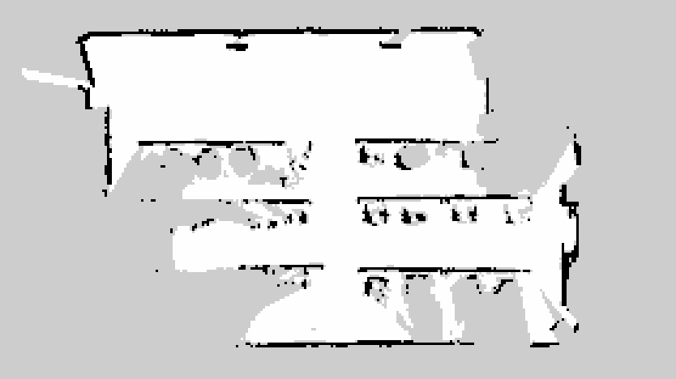

2026 Fall · Intelligent Robotics
Where Is My Cup?
A Robot That Remembers Where Things Are
Speaker : Team 6
December 10, 2026
Mapping and Localization
Graph-based SLAM, then Monte Carlo Localization
Mapping

Cartographer map

Nav map: aisles only
•Graph-based SLAM · loop closure
•Unknown ≠ free
Localization (AMCL = MCL)
Predict — odometry motion model
Weight — likelihood field
Resample — low variance
[ Photo 2 ]
AMCL particles converging (Demo Day)
Known map → errors stop piling up
Case 1 : The Map That Wouldn't Turn
A 90° turn, 0° in odometry

L-shaped drive → straight map
| Wheels | +97.7° |
| IMU | +91.7° |
| /odom | 0° |
Heading from wheels → +91.6°
Check odometry before blaming SLAM